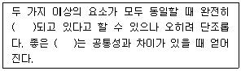
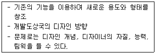

시각디자인산업기사 (2004-09-05 기출문제)
1과목: 색채학
1. 다음 명도에 관한 설명 중 잘못된 것은?
- 순색에 검정을 혼합하면 암색(暗色)이 된다.
- 순색에 흰색을 혼합하면 명색(明色)이 된다.
- 모든 순색은 명도가 서로 같고 무채색에서만 명도 차이가 있다.
- 무채색의 명도 단계표(value scale)는 명도 판단의 기준이 된다.
(정답률: 알수없음)

2. 오스트발트 표색계의 설명으로 틀린 것은?
- 백색량(W) + 흑색량(B) + 순색량(C) = 100% 이다.
- 무채색일 경우 W + B = 100% 가 된다.
- 완전 백색, 완전 흑색, 순색을 각각 꼭지점으로 하는 정3각형을 구성한다.
- 기본 8 색상을 각각 4 색상으로 세분하여 32색상으로 이루어져 있다.
(정답률: 알수없음)
3. 기업색채의 계획방법에 관한 설명 중 가장 올바른 것은?
- 눈에 잘 띄고 독특한 색으로만 계획하여야 한다.
- 기업체에 관련된 사람들이 좋아하는 색으로 계획한다.
- 기업과 상품 이미지, 기호 이미지가 통합된 이미지를 나타내어야 한다.
- 동색 계열의 색채로 계획하여야 한다.
(정답률: 알수없음)
4. 색의 3속성에 대한 설명으로 옳지 않은 것은?
- 색의 3속성에는 색상(hue), 명도(value), 채도(chroma)가 있다.
- 감각으로 구별되는 색의 속성을 색상이라고 한다.
- 색의 밝음의 감각을 척도화한 것을 명도라고 한다.
- 채도가 0일 때 가장 순수한 색이 된다.
(정답률: 알수없음)
5. 문.스펜서 색채조화론의 균형점에서 색상 YR, 채도가 5보다 클 때 심리적 효과는?
- 자극적, 서늘함
- 안정감, 온도감
- 안정감, 중성감
- 자극적, 따뜻함
(정답률: 알수없음)
6. 색채조절의 일반적인 효과와 거리가 먼 것은?
- 눈의 피로와 긴장이 감소된다.
- 사고나 재해를 감소시킨다.
- 능률이 향상되어 생산력이 높아진다.
- 쾌적한 온도를 유지할 수 있다.
(정답률: 알수없음)
7. 무채색의 명도단계를 축으로 하여 색상, 명도, 채도를 단계적으로 배열한 기구는?
- 색상환 도표
- 동일색상면 도표
- 명도 및 채도 단계 도표
- 색입체
(정답률: 알수없음)
8. 다음 중 우울, 무기력을 연상시키는 색은?
- 흰색
- 회색
- 청색
- 자주색
(정답률: 알수없음)
9. 난색에 관한 설명 중 옳은 것은?
- 대체로 진출색과 일치한다.
- 같은 정도의 색조일 때 한색보다 자극이 약하다.
- 한색보다는 사람에게 친근감을 덜 준다.
- 한색보다 사람을 차분하게 하는 효과가 있다.
(정답률: 알수없음)
10. 밝은 곳에서 어두운 곳으로 갑자기 들어갔을 때 시간이 조금 지난 후에야 주위의 물체를 식별할 수 있는 것을 무엇이라고 하는가?
- 명순응
- 색순응
- 암순응
- 무채순응
(정답률: 알수없음)
11. 헤링(E.Hering)의 반대색설에 관한 설명 중 잘못된 것은?
- 혼색과 색각이상을 잘 설명할 수 있다.
- 4원색과 무채색광을 가정하고 있다.
- 이화작용, 동화작용으로 설명할 수 있다.
- 분해, 합성이 동시에 일어날 때 그 정도에 따라 회색의 감각이 생긴다.
(정답률: 알수없음)
12. 무채색에 대한 설명 중 옳은 것은?
- 주로 어두운 색을 말한다.
- 탁한 색을 말한다.
- 유채색 중에서 어두운 색을 말한다.
- 색상과 채도는 없고 명도만 있다.
(정답률: 알수없음)
13. 다음 중 먼셀(Munsell)의 기본 5원색은?
- R, Y, G, B, P
- R, O, Y, B, P
- R, Y, B, C, P
- PB, YR, GY, BG, RP
(정답률: 알수없음)
14. 서로 다른 두 색이 서로의 영향으로 밝은 색은 더 밝게, 어두운 색은 더 어둡게 나타나는 대비 현상은?
- 명도대비
- 색상대비
- 채도대비
- 연변대비
(정답률: 알수없음)
15. 다음 색의 진출, 후퇴의 일반적인 성질 중 틀린 것은?
- 배경색과의 명도차가 큰 밝은 색은 진출되어 보인다.
- 채도가 낮은 배경색에 대한 높은 채도의 색은 진출되어 보인다.
- 난색계는 한색계보다 진출되어 보인다.
- 배경색의 채도가 높은 것에 대한 낮은 색은 진출되어 보인다.
(정답률: 알수없음)
16. 다음 중 유채색과 무채색의 배색 효과는?
- 경쾌하고 강한 대립
- 침착하고 정적
- 온화한 느낌
- 무겁고 침착
(정답률: 알수없음)
17. 색채환경 분석에서 경쟁업체의 관용색채 분석 대상으로 비교적 거리가 먼 것은?
- 기업색
- 상품색
- 포장색
- 기호색
(정답률: 알수없음)
18. 다음 색채에 관한 설명 중 틀린 것은?
- 사과는 빨간색, 바나나는 노랑색이라고 구체적 대상과 관련하여 기억하는 색을 기억색이라 한다.
- 황색은 시감도가 높은 색이다.
- 고명도의 색채는 가볍게 느껴진다.
- 중명도 이하의 채도가 높은 색채는 부드러운 느낌을 준다.
(정답률: 알수없음)
19. 보색대비의 효과를 주기에 가장 적절한 배색은?
- 빨강 - 초록
- 빨강 - 노랑
- 빨강 - 검정
- 빨강 - 보라
(정답률: 알수없음)
20. 다음 중 선명한 빨강의 감성에 적합한 것은?
- 따뜻하게 느껴진다.
- 차분하다.
- 후퇴되어 보인다.
- 가볍게 느껴진다.
(정답률: 알수없음)
2과목: 인쇄 및 사진기법
21. 종이의 인쇄 적성과 가장 관계가 없는 것은?
- 표면 평활성
- 잉크 수리성
- 종이의 표면강도
- 종이의 내절강도
(정답률: 알수없음)
22. 카메라에 들어오는 빛의 양을 조절하는 장치로 피사체의 움직임과 관련이 있는 것은?
- 셔터
- 렌즈 후드
- 파인더
- 램프
(정답률: 알수없음)
23. 감광층을 투과한 빛이 지지체의 경계면에서 굴절 반사되어 감광층을 감광시키는 현상은?
- 할레이션 현상
- 이레디에이션 현상
- 솔라리제이션 현상
- 간헐 효과
(정답률: 알수없음)
24. 대형카메라의 무브먼트(movement)에 대한 설명 중 틀린 것은?
- 라이즈(rise) - 카메라의 앞,뒤판을 위로 올리는 것
- 폴(fall) - 카메라의 앞,뒤판을 돌리는 것
- 시프트(shift) - 카메라를 좌우 방향으로 이동시키는 것
- 틸트(tilt) - 카메라의 앞,뒤판을 경사지게 하는 것
(정답률: 알수없음)
25. 사진현상액의 보조제 중에서 억제제로 사용되는 약품은?
- 아황산나트륨
- 탄산나트륨
- 브롬화칼륨
- 명반
(정답률: 알수없음)
26. 렌즈의 초점거리가 사용하는 필름의 대각선 길이 보다 짧은 렌즈는?
- 장초점 렌즈
- 망원 렌즈
- 광각 렌즈
- 표준 렌즈
(정답률: 알수없음)
27. 광화학적 제판법에 속하지 않는 것은?
- 원색판
- 사진평판
- 그라비어(Gravure)판
- 연판
(정답률: 알수없음)
28. 공간감이나 입체감을 표현하기가 부적당하지만 평면적이거나 색을 충실하게 표현할 때 사용되는 광선 조건은?
- 순광선
- 측광선
- 역광선
- 상단 광선
(정답률: 알수없음)
29. 인쇄 4방식을 바르게 설명한 것은?
- 볼록판인쇄, 평판인쇄, 오목판인쇄, 공판인쇄
- 스크린인쇄, 공판인쇄, 볼록판인쇄, 평판인쇄
- 라벨인쇄, 볼록판인쇄, 콜로타이프, 평판인쇄
- 금속인쇄, 오목판인쇄, 평판인쇄, 볼록판인쇄
(정답률: 알수없음)
30. 펄프(Pulp)의 원료가 되는 식물섬유의 화학적 조성으로만 나열된 것은?
- 폴리올레핀, 셀룰로오스, 클로로포름, 폴리에틸렌
- 크라프트, 폴리올레핀, 리그닌, 폴리에스테르
- 셀룰로오스, 헤미셀룰로오스, 리그닌
- 디스크리파이너, 헤미셀룰로오스, 리그닌
(정답률: 알수없음)
31. 컬러 감광재료의 3층의 유제가 발색하는 각각의 커플러가 바르게 연결된 것은?
- 청감층 - 옐로
- 녹감층 - 시안
- 적감층 - 마젠타
- 녹감층 - 옐로
(정답률: 알수없음)
32. 스포팅(spotting) 작업이란?
- 인화시 엷은 흔적을 제거 하는 것
- 생동감 있는 인화를 하기 위한 것
- 지문을 이용하여 특수 효과를 주는 것
- 인화할 때 계조화 할 수 있는 것
(정답률: 알수없음)
33. 잉크가 판을 통과하여 인쇄되는 인쇄방식은?
- 볼록판인쇄
- 평판인쇄
- 오목판인쇄
- 스크린인쇄
(정답률: 알수없음)
34. 인쇄기 중 가장 오래된 방식은?
- 평압식 인쇄기
- 원압식 인쇄기
- 윤전식 인쇄기
- 오프셋식 인쇄기
(정답률: 알수없음)
35. 인화작업시 사용되는 오렌지색(orange color) 필터는?
- 흑백인화지 사용시 안전등 필터
- 콘트라스트 강조 또는 하강용 필터
- 포그(fog) 필터
- 색분해 전용 필터
(정답률: 알수없음)
36. 감광재료가 전혀 빛을 받지 않아도 현상처리 후 흑화되는 현상은?
- 흐림(fog)
- 간헐효과
- 할레이션 현상
- 허셀 효과
(정답률: 알수없음)
37. 촬영시 정면광이 사진에 미치는 영향에 대하여 잘 표현된 것은?
- 화상이 밝고 인물일 경우 톤(tone)이 잘 나타나지 않는다.
- 다른 빛에 비하여 콘트라스트(contrast)가 강하다.
- 입체감이 있고 그늘이 생긴다.
- 인물사진에서 해상력이 좋아 사용되는 조명이다.
(정답률: 알수없음)
38. 제책 공정 중에서 인쇄물의 잘못된 것과 쪽빠짐, 수량 검사, 인쇄의 물림 쪽과 옆맞춤 쪽이 정확하게 일치되도록 하는 과정은?
- 인쇄지 검사
- 쪽맞추기
- 고르기
- 등굽힘
(정답률: 알수없음)
39. 스튜디오 조명으로 부드러운 조명을 얻고자 할 때의 방법 중 가장 바람직하지 못한 것은?
- 소프트 박스를 사용한다.
- 트레싱지를 조명 앞에 씌워 사용한다.
- 반사판을 이용하여 간접조명을 사용한다.
- 광량을 낮춘다.
(정답률: 알수없음)
40. 표면 가공의 목적이 아닌 것은?
- 인쇄물의 광택을 제거한다.
- 잉크의 퇴색을 방지한다.
- 습기를 방지한다.
- 장식 효과를 높인다.
(정답률: 알수없음)
3과목: 시각디자인론
41. 디자인 매니지먼트의 진행과정이 바르게 된 것은?
- 계획화 - 조직화 - 동기화 - 조정 - 통제화
- 계획화 - 통제화 - 조직화 - 동기화 - 조정
- 계획화 - 동기화 - 조정 - 통제화 - 조직화
- 동기화 - 계획화- 조정 - 통제화 - 조직화
(정답률: 알수없음)
42. 다음 바우하우스에 대한 설명으로 옳지 않은 것은?
- 바우하우스의 교육은 기초, 공방, 건축교육 등의 순서로 실시되었다.
- 바우하우스의 조형이념이 미국으로 전이되어 미국에 큰 영향을 미쳤다.
- 바우하우스의 교수인 모홀리나기는 자연의 법칙을 학생들에게 체험케했다.
- 제2기의 바우하우스교육은 하네스마이어에 의해 베를린을 중심으로 시작되었다.
(정답률: 60%)
43. 최근 디자인을 무형의 자산으로 인식하고 있다. 이러한 디자인 정책에 관한 설명 중 가장 거리가 먼 것은?
- 경영 합리화를 위한 기술개발의 도입이다.
- 제품에 따른 라벨, 포장 광고에 이르는 디자인 통일화 작업이다.
- 디자인 정책은 기업의 유효한 수단이 된다.
- 상품의 생산적 환경에 디자인적 통일을 꾀하는 것이다.
(정답률: 알수없음)
44. 디자인 정책의 문제 중 중요한 것의 하나가 기업의 표시정책이다. 다음 중 가장 대표적인 것은?
- 포장디자인
- 광고디자인
- CIP디자인
- DM디자인
(정답률: 알수없음)
45. 모더니즘의 문제와 폐단을 해결하고자 하는 개혁주의적 경향이 큰 흐름을 갖는 사조는?
- 미니멀리즘
- 신조형주의
- 포스트모더니즘
- 미래주의
(정답률: 알수없음)
46. 다음 중 투시도법의 기본 요소가 아닌 것은?
- 눈의 위치
- 대상물
- 색채
- 거리
(정답률: 알수없음)
47. 산업디자인의 최종 목적은?
- 기계의 잇점을 최대한 이용하는 것
- 상상력과 기술력을 갖추는 것
- 기업의 이윤추구를 위한 수단으로 사용되는 것
- 생활의 질을 향상시키는 것
(정답률: 알수없음)
48. 1927년 새로운 직업으로서 공업디자인 사무실을 개설하여 디자인 비지니스의 효시가 되었고, 최초의 유선형 기관차 등 유선형의 공업 디자인으로 유명한 미국 공업 디자인의 선구자는?
- 헨리 설리반
- 로이트 라이트
- 벨 게데스
- 반 데 로헤
(정답률: 알수없음)
49. 바이마르 미술 공예학교와 바이마르 미술아카데미를 통합하여 Bauhaus라는 이름으로 통합한 년도는?
- 1910년
- 1915년
- 1919년
- 1925년
(정답률: 알수없음)
50. 인간의 감각 중 가장 많은 정보를 받아들이는 것은?
- 후각
- 시각
- 청각
- 미각
(정답률: 알수없음)
51. 유켄트 스틸(Jugend stil)과 가장 관련이 깊은 것은?
- 독일의 아르누보 운동
- 영국의 미술공예 운동
- 벨기에의 신미술 운동
- 이태리의 신예술 운동
(정답률: 알수없음)
52. 물품의 보이지 않는 부분의 형상을 표시하는 선은?
- 절단선
- 은선
- 해칭
- 파단선
(정답률: 알수없음)
53. "형태는 기능을 따른다"라는 조형성을 강조한 사람은?
- 루이스 설리반
- 윌리암 모리스
- 레이몬드 로위
- 헨리 포드
(정답률: 알수없음)
54. 합리성, 심미성, 경제성, 독창성 등 좋은 디자인의 4가지 조건 중 디자인의 감성적 요소를 결정하는 것은?
- 합리성, 경제성
- 심미성, 독창성
- 합리성, 심미성
- 경제성, 독창성
(정답률: 알수없음)
55. 다음 중 가는 실선을 사용해서는 안되는 경우는?
- 절단선
- 치수보조선
- 지시선
- 인출선
(정답률: 알수없음)
56. 다음 내용 속에 들어갈 디자인 원리는?

- 조화
- 변화
- 대비
- 균제
(정답률: 알수없음)
57. 디자인의 기능적 형태로 구체화된 형태의 기본 유형은?
- 자연적 형태
- 기하학적 형태
- 비구상적 형태
- 추상적 형태
(정답률: 알수없음)
58. 대량생산을 위해서는 물건의 표준화(규격화)가 전제되어야 한다는 점을 일찍이 인식하고 1907년 독일에서 산업가, 건축가, 디자이너, 평론가들에 의해 조직된 단체는?
- 독일공작연맹
- 바우하우스
- 울름조형대학
- 유겐트 스틸
(정답률: 알수없음)
59. 근대 디자인사의 연대별 순서가 올바른 것은?
- 미술공예운동 → 독일공작연맹 → 아르누보 → 바우하우스
- 독일공작연맹 → 아르누보 → 미술공예운동 → 바우하우스
- 미술공예운동 → 아르누보 → 독일공작연맹 → 바우하우스
- 독일공작연맹 → 미술공예운동 → 아르누보 → 바우하우스
(정답률: 알수없음)
60. 다음 중 디자인의 시각요소와 가장 거리가 먼 것은?
- 형태
- 중량
- 크기
- 색채
(정답률: 알수없음)
4과목: 시각디자인실무 이론
61. 편집디자인의 레이아웃에 관한 설명 중 옳은 것은?
- 레이아웃 형태는 프리 방식과 그리드 방식으로 나눌 수 있다.
- 레이아웃 형태는 그리드 방식과 모듈 방식으로 나눌 수 있다.
- 프리방식은 모듈에 의한 구성과 그 구조에 의존하는 방식이다.
- 그리드방식은 디자이너의 직관력에 의존한다.
(정답률: 알수없음)
62. 장식포스터를 나타내는 것으로 1925년 파리에서 개최된 박람회의 제목에서 유래된 용어는?
- 아르데코(Art Deco)
- 아르누보(Art nouveau)
- 큐비즘(Cubism)
- 쉬르레알리즘(Surrealism)
(정답률: 알수없음)
63. 동기부여 이론에서 인간욕구 5단계(①생리적 욕구 ②안전 ③사회적욕구 ④존경의 욕구 ⑤자아 실현의 욕구)를 주창한 사람은?
- 맥카시
- 마슬로우
- 얀켈로 비치
- 하워드
(정답률: 알수없음)
64. 인쇄매체 광고의 효과를 측정하는 방법의 하나로 매체에 접촉한 독자 중 몇 %가 게재된 특정 광고를 보았는가를 나타내는 것은?
- 광고 싸이클
- 광고 캠페인
- 광고 접촉률
- 광고 주목률
(정답률: 알수없음)
65. 국가의 경제성과 문화수준, 예술성을 잘 나타내주는 포스터는?
- 공공 캠페인 포스터
- 문화행사 포스터
- 관광 포스터
- 상품광고 포스터
(정답률: 알수없음)
66. 다음 중 인쇄에서 모아레(moire) 현상을 설명한 것은?
- 제판에서 망판의 점 또는 선의 각도가 서로 맞지 않아 무늬가 생기는 현상
- 화면의 밝은 부분으로부터 어두운 부분까지의 단계가 연속되어지는 현상
- 활자인쇄 후 특수 플라스틱 분말을 묻혀 가열하면 잉크부분이 부풀어 오르는 현상
- 잉크의 접착력과 종이의 표면 강도가 균형이 맞지 않아 종이에 균열이 가는 현상
(정답률: 알수없음)
67. 포장의 기능을 설명한 것 중 잘못된 것은?
- 보호와 보존의 기능을 지녀야 한다.
- 구매자에게 소구력을 줄 수 있는 전달의 기능을 가져야 한다.
- 운반하기 간편해야 하고, 제품이 쓰기 쉬워야 할 뿐 아니라, 빠른 시일내에 사용할 수 있도록 해야 한다.
- 소비자가 상품을 구입하도록 구매의욕을 갖게 해야 한다.
(정답률: 알수없음)
68. CIP(Corporate Identity Program)의 설명 중 틀린 것은?
- 상품을 손에 집어들게 하는 구체적 행위를 유발시키는 감성적인 실행 수단이라 볼 수 있다.
- 현대에 와서 필요성이 강조되고 있으며, 기술혁신과 판매망의 확산에 따라 소비자와 접하게 된다.
- 기업활동의 마케팅 전략상 또는 구인 전략상 유리하게 이끌 수 있다.
- 기업이나 공공단체가 갖고 있는 이미지를 시각적으로 체계화, 단일화한 것으로 기업의 실체를 확실하게 인식시키는데 목적이 있다.
(정답률: 알수없음)
69. 캘리그래피(calligraphy)에 대한 설명 중 틀린 것은?
- 펜에 의한 육필문자를 조형적으로 아름답게 묘사하는 기술을 말한다.
- 1920년대 독일의 얀 치홀트(Jan Tschichold)가 주창한 스타일이다.
- 영문자의 초서(草書)적 서사예술이라 할 수 있다.
- 캘리그래피를 직접 실천한 이로서는 독일의 헤르만 자프(Herman Zapf)가 대표적이다.
(정답률: 알수없음)
70. 꼭두각시, 장난감, 프리즘, 현대의 영화나 TV 등이 어떠한 대상의 연장이라 할 수 있는가?
- 시각적 대상
- 유희적 대상
- 조작적 대상
- 공간적 대상
(정답률: 알수없음)
71. POP를 설명한 것 중 거리가 먼 것은?
- 구매하는 바로 그 장소에서의 광고를 말한다.
- 포스터, 조명, 스티커, 제품안내, 행거, 가격표 등이 있다.
- 원칙적으로 세로 쓰기가(문안) 좋다.
- 상품의 포인트로 주목과 흥미, 구매욕구를 유발시킨다.
(정답률: 알수없음)
72. 설득적, 감화적 전달에 따르는 커뮤니케이션의 매체전달형식의 요소로 적합하지 않은 것은?
- 포스터
- 통계도표
- 광고
- 영화
(정답률: 알수없음)
73. 기업에서 구인광고는 신문광고 중 어느 분야에 속하는가?
- 영업광고
- 안내광고
- 돌출광고
- 임시광고
(정답률: 알수없음)
74. 다품종 소량생산(多品種 少量生産)체제의 목적으로 틀린 것은?
- 소비자의 다양한 필요를 채워주기 위한 전략이다.
- 더욱 세분화된 시장적응을 위한 것이다.
- 생산공정의 단순화를 위한 체제이다.
- 소규모이기는 하나 더욱 동질적인 소비자 그룹을 공략하기 위한 것이다.
(정답률: 알수없음)
75. 자동차에 대한 소비자의 선호도를 스포티한 것과 사치스러운 것의 두 개의 속성을 가지고 공간 속의 위치를 설정 조사하고자 할 때의 시장 포지셔닝 작성 방법은?
- 다차원적 척도법
- 의미론적 차별화법
- 체크리스트법
- 매트릭스법
(정답률: 알수없음)
76. Quark X-press 프로그램으로 이미지를 활용한 편집을 하려고 한다. 이 때 효과적으로 사용할 수 있는 이미지 파일 포맷 중 가장 적당한 파일로 묶여진 항목은?
- BMP 혹은 GIF 파일
- EPS 혹은 PICT
- TIFF 혹은 TGA 파일
- Photo CD 혹은 PCX 파일
(정답률: 알수없음)
77. 타이포그래피의 조건에 대한 설명으로 적합한 것은?
- 보편적으로 글자를 꾸며야 한다.
- 명료성 및 가독성을 고려하여야 하고 서체의 미적인 면도 갖추어야 한다.
- 인쇄되지 않은 부분은 공간과는 관계 없다.
- 글자 사이의 여백은 중요한 부분이 아니다.
(정답률: 알수없음)
78. 고객에게 만족과 이익을 주고 기업의 목적을 달성할 수 있도록 물자나 용역을 소비자에게로 유통시키는 모든 경영활동을 의미하는 것은?
- 런칭
- 마케팅
- 네이밍
- 애드버타이징
(정답률: 알수없음)
79. 리커트 척도(Likert Scale) 사용의 네 단계 중 제일 첫 단계는 무엇인가?
- 조사하고자 하는 태도에 관한 리스트 작성
- 동의 또는 반대한다는 반응을 선정
- 자기의 태도를 나타내는 반응을 보이도록 처리
- 계산
(정답률: 알수없음)
80. 다음 내용의 신제품 개발 디자인 유형은?

- 적응 디자인
- 모방 디자인
- 수정 디자인
- 발명 디자인
(정답률: 알수없음)
모든 순색은 명도가 서로 같고 무채색에서만 명도 차이가 있다는 것은, 색상의 명도는 색상의 채도와는 독립적으로 존재한다는 것을 의미합니다. 따라서 같은 명도를 가진 두 색상은 서로 다른 채도를 가질 수 있지만, 무채색에서만 명도 차이가 나타납니다. 이는 무채색이 명도 판단의 기준이 되기 때문입니다.